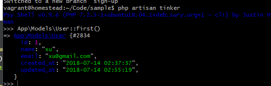

用户资源
我们之前已使用 Tinker 成功创建了一个用户对象, 运行下面命令使用 Tinker ;来查询用户的信息, 确保用户对象在数据库中确实存在
$ php artisan tinker
从数据库中获取一号数据
>>> App\Models\User::first()

接下来让我们着手进行个人信息页面的构建, 并在此页面上对用户信息进行显示.
Laravel 遵循 RESULTful 架构的设计原则, 将数据看作是一个资源, 对资源进行获取, 创建, 修改和删除, 分别对应 HTTP 协议提供的 GET, PATCH 和 DELETE 方法. 当我们要查看一个 id 为 1 的用户时, 需要向 /user/1 地址发送一个请求, 当 Laravel 路由接收到请求的时候, 默认会把该请求传给控制器的 show 方法来进行处理.
Laravel 为我们提供了 resource 方法来定义用户资源路由
routes/web.php
<?php
Route::get('/', 'StaticPagesController@home')->name('home');
Route::get('/help', 'StaticPagesController@help')->name('help');
Route::get('/about', 'StaticPagesController@about')->name('about');
Route::get('signup', 'UsersController@create')->name('signup');
Route::resource('users', 'UsersController');
新增的 resource 方法将遵循 RESULTful 架构为用户资源生成路由器, 该方法接收两个参数, 第一个参数为资源名称, 第二个参数为控制器名称.
Route::resource('users', 'UsersController');
上面的代码等同于:
Route::get('/users', 'UsersController@index')->name('users.index');
Route::get('/users/{user}', 'UsersController@show')->name('users.show');
Route::get('/users/create', 'UsersController@create')->name('users.create');
Route::post('/users', 'UsersController@store')->name('users.store');
Route::get('/users/{user}/edit', 'UsersController@edit')->name('users.edit');
Route::patch('/users/{user}', 'UsersController@update')->name('users.update');
Route::delete('/users/{user}', 'UsersController@destory')->name('users.destory');
可以看到使用 resource 方法让我们少写了很多代码, 且严格按照 RESULTful 架构对路由进行设计, 生成的资源路由信息如下所示:

这是我们访问 http://sample.test/users/1 页面, 会出现如下页面, 这是因为该路由请求由 UsersController 里面的 show 方法来处理, 但是该方法还不存在, 因此会报错.

UsersController 的 show 方法定义如下
app/Http/Controllers/UsersController.php
<?php
namespace App\Http\Controllers;
use Illuminate\Http\Request;
use App\Http\Requests;
use App\Models\User;
class UsersController extends Controller
{
public function create()
{
return view('users.create');
}
public function show(User $user)
{
return view('users.show', compact('user'));
}
}
Laravel 会自动解析定义在控制器方法 ( 变量名匹配路由片段 ) 中的 Eloquent 模型类型声明, 在上面代码中, 由于 show() 方法传参时声明了类型--Eloquent 模型 User, 对应的变量名 $user 会匹配路由片段中的 {user}, 这样, Laravel 会自动注入与请求 URI 中传入的 ID对应的用户模型实例.
此功能成为 [ 隐性路由模型绑定 ] , 是约定优于配置设计范式的体现, 同时满足以下两种情况, 此功能即会自动启用:
- 路由声明时必须使用 ELoquent 模型的单数小写格式来作为路由片段参数, User 对应 {user}
- 控制器方法传参中必须包含对应的 Eloquent 模型类型声明, 并且是有序的
public function show(User $user)
{
return view('users.show', compact('user'));
}
当请求http://sample,test/users/1 并且满足上述来年各个条件时, Laravel 会自动查找 ID 为 1
的用户并且赋值到变量 $user 中, 如果数据库找不到对应的模型实例, 会自动生成 HTTP 404 响应.
return view('users.show', compact('user'));
我们将用户对象 $user 通过 compact 方法转化为一个关联数组, 并且作为第二个参数传递给 view 方法, 将数据与视图进行绑定.
show 方法添加完成后, 我们便能能够在视图中使用 user 变量来访问通过 view 方法传递给视图的用户数据.
由于我们还没有创建用户个人页面, 因此这时访问用户页面时会出现以下报错
view [users.show] not found
下面让我们创建一个用户个人界面
resources/views/users/show.blade.php
@extends('layouts.default')
@section('title', $user->name)
@section('content')
{{ $user->name }} - {{ $user->email }}
@stop
由于 我们使用了 view('users.show', compact('user')) 将用户数据与视图进行绑定, 因此在视图中可以直接使用 $user 来访问用户实例.
这是我们再访问用户个人页面, 就能够查看基本的数据展示
Gravatar 头像和侧边栏
现在, 我们要为用户的个人页面添加头像显示的功能, 接下来的项目开发将使用 Gravatar 来为用户提供个人头像支持, Gravatar 为 "全球通用头像" , 在Garavar 服务器上放置了自己的头像之后, 可通过将自己的 Garavar 登录邮箱进行 MD5 转码, 并与 Garavar 的 URL 进行拼接来获取自己的 Garavar 头像,.
接下来让我们在用户模型中定义一个 garavar 方法, 用来生成用户的头像.
app/Models/User.php
<?php
namespace App\Models;
.
.
.
class User extends Authenticatable
{
.
.
.
public function gravatar($size = '100')
{
$hash = md5(strtolower(trim($this->attributes['email'])));
}
}
该方法主要做了以下几个操作:
- 为 gravatar 方法传递参数 size 指定值
- 通过 $this->attributes['email'] 获取到用户的邮箱
- 使用 trim 方法剔除邮箱的前后空白内容
- 用 strtolower 方法将邮箱转换为小写
- 将小写的邮箱使用 md5 方法进行转码
- 将转码后的邮箱与链接, 尺寸拼接成完整的 URL 并返回
定义好 gravatar 之后, 我们便可以在视图中通过以下方式进行调用
使用默认尺寸来获取头像
$user->gravatar();
为 gravatar 指定尺寸大小来获取头像:
$user->gravatar('140');
接下来让我们来构建一个全局通用视图, 用于展示用户的头像和用户名等基本信息.
resources/views/shared/_user_info.blade.php
<a href="{{ route('users.show', $user->id) }}">
<img src="{{ $user->gravatar('140') }}" alt="{{ $user->name }}" class="gravatar"/>
</a>
<h1>{{ $user->name }}</h1>
该视图被嵌套在用户个人信息中进行使用, 因此我们需要对个人用户页面进行修改, 加入我们新创建的用户信息局部视图.
resources/views/users/show.blade.php
@extends('layouts.default')
@section('title', $user->name)
@section('content')
<div class="row">
<div class="col-md-offset-2 col-md-8">
<div class="col-md-12">
<div class="col-md-offset-2 col-md-8">
<section class="user_info">
@include('shared._user_info', ['user' => $user])
</section>
</div>
</div>
</div>
</div>
@stop
我们可以通过 @include 方法传参, 将用户数据以关联数组的形式传送到 _user_info 局部视图上.
@include('shared_user_info', ['user' => $user])
接下来对样式进行优化
resources/assets/sass/app.scss
.
.
.
/* sidebar */
aside {
section {
padding: 10px 0;
margin-top: 20px;
&:first-child {
border: 0;
padding-top: 0;
}
span {
display: block;
margin-bottom: 3px;
line-height: 1;
}
}
}
section.user_info {
padding-bottom: 10px;
margin-top: 20px;
text-align: center;
.gravatar {
float: none;
max-width: 70px;
}
h1 {
font-size: 1.4em;
letter-spacing: -1px;
margin-bottom: 3px;
margin-top: 15px;
}
}
.gravatar {
float: left;
margin-right: 10px;
max-width: 50px;
border-radius: 50%;
}
再次访问个人页面时, 就可以看到用户头像了